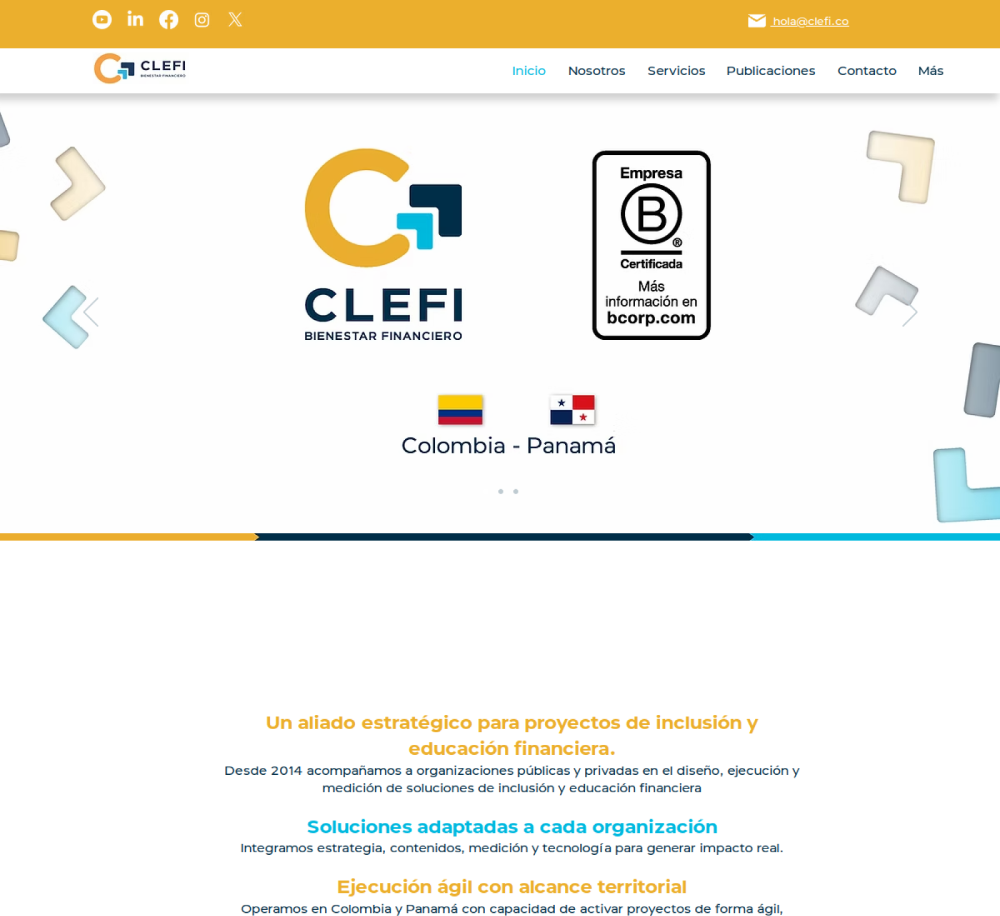

CLEFI · Bogotá
Financial education web, Colombia
Full-stack AI at CLEFI: Django/React learning surfaces, NLP search, and engagement dashboards for financial-wellbeing programs in Colombia and Panama.
Web · AI / ML · LMS · Django · React
clefi.co ↗